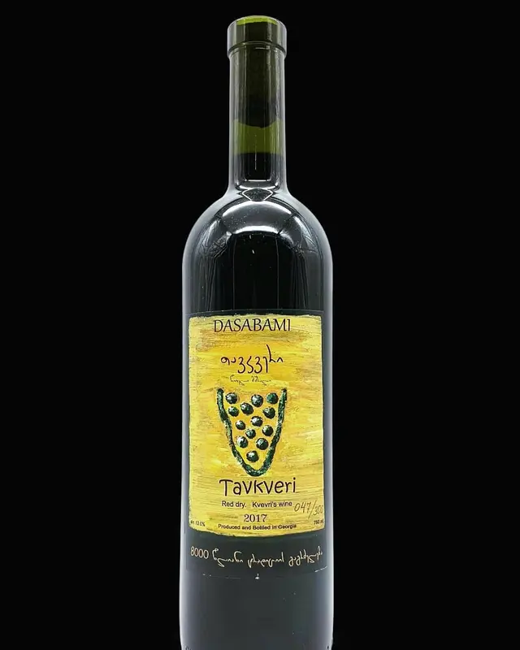
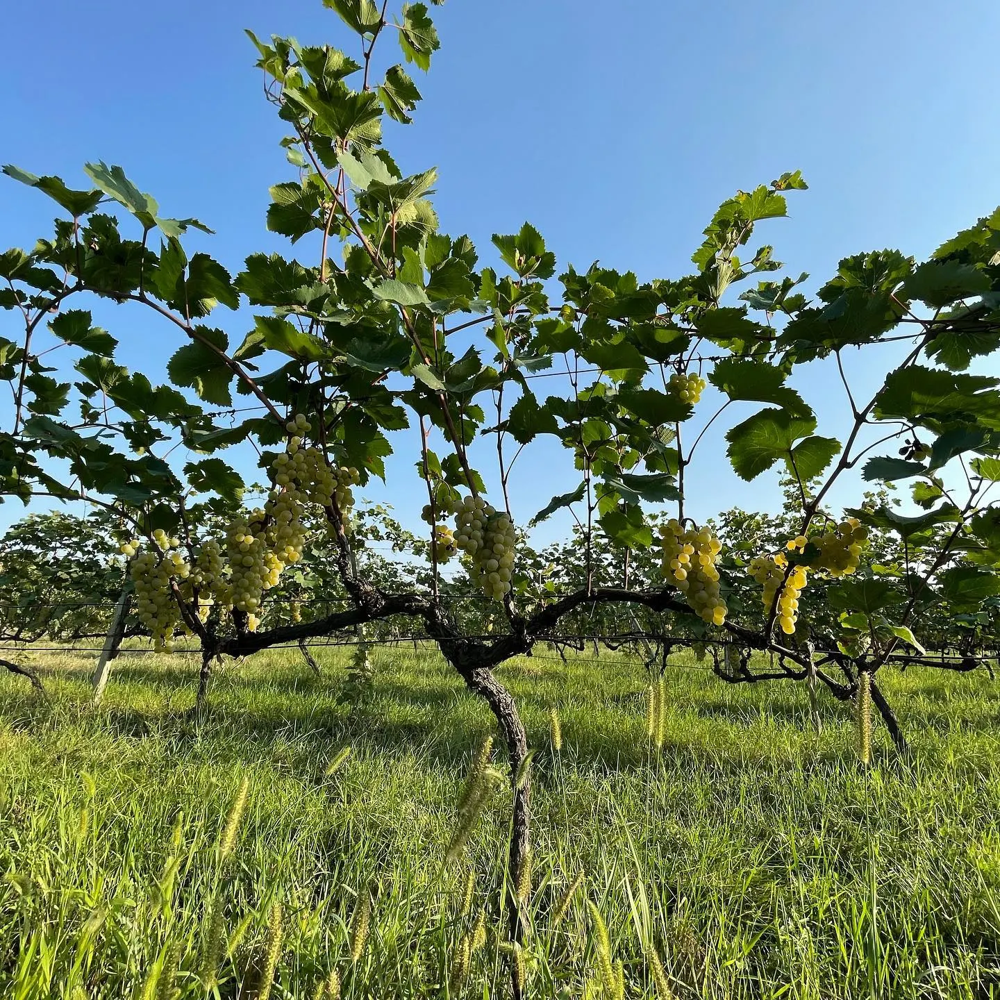
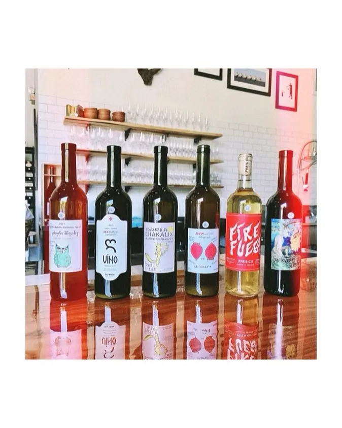
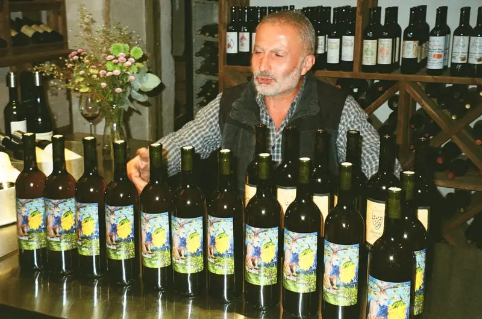
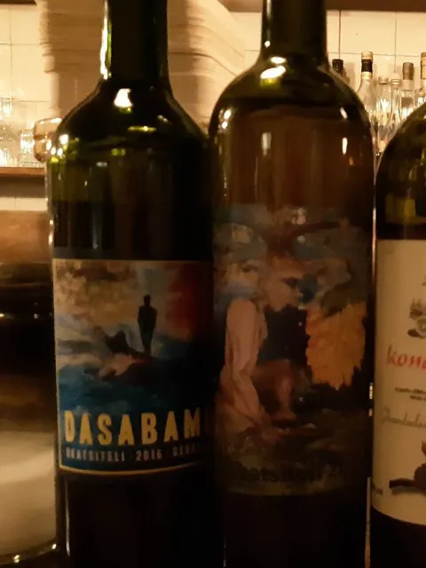
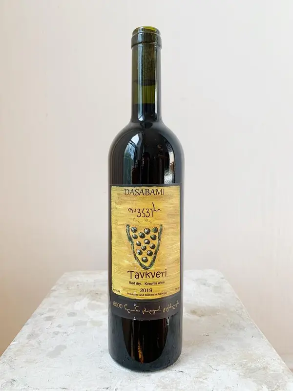

0ჰა
ვენახიორგანული, საოჯახო, თამარისში
ნატურალური, ორგანული ქვევრის ღვინო 70 წლის საოჯახო ვენახიდან, ქვემო ქართლიდან. ოთხი ადგილობრივი ჯიში და საუკუნეზე ხნიერი ქვევრი.

ქვემო ქართლის გორაკებზე ერთი ოჯახი 70 წლის ვაზის ერთადერთ ორგანულ ჰექტარს უვლის. აქ რქაწითელი, მწვანე, ხიხვი და თავკვერი ღვინოდ იქცევა ისე, როგორც ზაზას მამა აყენებდა: ჭაჭაზე, თიხაში, მიწის ქვეშ.
ვენახიორგანული, საოჯახო, თამარისში

ძველი ვაზისაოჯახო ვენახის ასაკი

ბოთლი წელიწადშიმაქსიმუმ. თითოეული ღვინო რამდენიმე ასეული ბოთლია.

წლის ქვევრიოჯახის თიხის ჭურჭელი, საუკუნეზე ხნიერი

პირველი ჩამოსხმასამი თაობის მეღვინეობის შემდეგ

დასაბამი ზაზას მამამ დააარსა სოფელ თამარისში, თბილისის სამხრეთით. ზაზამ ოჯახის მარანი მამისგან გადაიბარა და დღეს ღვინოს მთელი ოჯახი ერთად აყენებს.
პროფესიით სამხედრო, ზაზამ ოჯახის ღვინო პირველად 2012 წელს ჩამოასხა. დასაბამი საქართველოს ბუნებრივი ღვინის ასოციაციის წევრია.


ორგანული ყურძენი, ველური საფუარი, არც დაწმენდა, არც ფილტრაცია. თეთრი ჯიშები ქვევრში ჭაჭაზე ქარვისფერ ღვინოდ იქცევა; თავკვერი წითელია.
ყველა ღვინო: ადგილობრივი საფუარი, ქვევრში დადუღება და დავარგება, დაწმენდისა და ფილტრაციის გარეშე, დამატებითი SO₂-ის გარეშე, ალუვიური ნიადაგი, 750 მლ.
წყარო: Roni Selects — აშშ-ის იმპორტიორის ტექნიკური ფურცლები. სვეტები შედარებულია 12 თვესა და 900 ბოთლთან.
ქვევრში ღვინის დაყენება — ასე აყენებს საქართველო ნატურალურ ღვინოს უკვე დაახლოებით 8000 წელია. დასაბამში ეს არ შეცვლილა.




ერთი ჰექტარი თამარისში, მდინარე ხრამის აღმოსავლეთით. ვენახი დაახლოებით 70 წლისაა, დარგულია რქაწითელი, მწვანე და თავკვერი; ხიხვი დაახლოებით 2009 წელს დაემატა.
საოჯახო ვენახი, რომელსაც სეზონიდან სეზონამდე უვლიან. ზამთარში ძველ, მავთულზე გაშვებულ ვაზს ხელით სხლავენ ახალი მოსავლისთვის.
ყურძენი საკუთარი, ადგილობრივი საფუარით დუღს მიწაში ჩაფლულ თიხის ქვევრებში, რომელთაგან ერთი საუკუნეზე ხნიერია. თეთრი ჯიშები სამიდან თორმეტ თვემდე რჩება ჭაჭაზე და ქარვისფერი ხდება.
დაწმენდის გარეშე, ფილტრაციის გარეშე, დამატებითი SO₂-ის გარეშე. თითოეული ღვინო რამდენიმე ასეული ბოთლია, წელიწადში სულ დაახლოებით 3000.
this Rkatsiteli she selected for us was divine.
ერთ-ერთი იმ მეღვინეთაგანი, ვინც საქართველოში ნატურალური ღვინის მოძრაობა დაიწყო.
ერთი საოჯახო ჰექტარი, წელიწადში დაახლოებით 3000 ბოთლი და საოჯახო ქვევრი, რომელმაც საუკუნეს გაუძლო.
აღწერილია წიგნში Tasting Georgia: ზაზასთან ერთად გზა თბილისიდან თამარისის მარნამდე, შავნაბადის ქვევრის მარნების გავლით.
ზაზამ მამის მარანი გადაიბარა და ვენახში თავის პატარა ვაჟსაც დაჰყავს, რომ ტრადიცია გაგრძელდეს.
2010 წლის რქაწითელი, ხუთი წელი ქვევრში: აბრეშუმივით ნაზი, ქარვისფერ-ოქროსფერი, ჩრდილოეთის მაყვლისა და ქაცვის ნოტებით, ყველთან კი შესანიშნავი.
ჰამბურგის ნატურალური ღვინის მაღაზიამ ხიხვი 2018 ენერგიულ, ცოცხალ და ღრმა ღვინოებს მიაკუთვნა.
ჩვენი Instagram-იდან და იმ ბარებიდან, მაღაზიებიდან და მეგობრებისგან, ვინც გვნიშნავს.
ადგილები, სადაც დასაბამი იყიდებოდა ან ისხმებოდა. ახალი ბოთლებისთვის მოგვწერეთ.



2026 წლის 22 ნოემბერს შევამოწმეთ ყველა ონლაინ მაღაზია, რომელიც ვიპოვეთ. ქვემოთ მოცემული ყველა პოზიცია გაყიდულია, ასე რომ ბოთლის შოვნის ყველაზე სანდო გზა ზაზასთვის მიწერაა.
 MORE Natural Wine
ბერლინი · მიწოდება ევროკავშირსა და დიდ ბრიტანეთში
ხიხვი 2019
MORE Natural Wine
ბერლინი · მიწოდება ევროკავშირსა და დიდ ბრიტანეთში
ხიხვი 2019
 Hop Burns & Black
ლონდონი, დიდი ბრიტანეთი
რქაწითელი 2016
Hop Burns & Black
ლონდონი, დიდი ბრიტანეთი
რქაწითელი 2016
 The Cellar d’Or
იტაკა, ნიუ-იორკი
რქაწითელი 2022 და 2020
The Cellar d’Or
იტაკა, ნიუ-იორკი
რქაწითელი 2022 და 2020
 Grand Wine Cellar
სიოსეტი, ნიუ-იორკი
რქაწითელი · 12-ბოთლიანი ყუთი
Grand Wine Cellar
სიოსეტი, ნიუ-იორკი
რქაწითელი · 12-ბოთლიანი ყუთი
 Flatiron Wines
სან-ფრანცისკო
დასაბამის კოლექცია
Flatiron Wines
სან-ფრანცისკო
დასაბამის კოლექცია
პროფილები, შეფასებები და იმპორტიორი
 Roni Selects
აშშ-ის იმპორტიორი
მწარმოებლის გვერდი და ტექნიკური ფურცლები
Roni Selects
აშშ-ის იმპორტიორი
მწარმოებლის გვერდი და ტექნიკური ფურცლები

Raisin ნატურალური ღვინის აპლიკაცია საზოგადოების შეფასებები
ბუნებრივი ღვინის ასოციაცია საქართველო წევრის პროფილი და ვენახები Wines of Georgia
კატალოგი
მარნის პროფილი
Wines of Georgia
კატალოგი
მარნის პროფილი
 Vivino
3.8, 222 შეფასება
მარნის გვერდი
Vivino
3.8, 222 შეფასება
მარნის გვერდი

დასაბამი 2026 წლის 28 ნოემბერს წარადგენს თავის ღვინოებს Amber Georgia-ზე — ქართული ნატურალური ღვინის მოგზაურ ფესტივალზე.
დასაბამი (Dasabami, „დასაწყისი“) საოჯახო ნატურალური ღვინის მარანია თამარისში — სოფელში მარნეულის მუნიციპალიტეტში, ქვემო ქართლში. ის მეღვინე ზაზა დარსაველიძის მამამ დააარსა; მარანი ერთი ჰექტარიდან წელიწადში დაახლოებით 3000 ბოთლამდე ნატურალურ, ორგანულ ქვევრის ღვინოს აყენებს.
ზაზა დარსაველიძე და მთელი მისი ოჯახი. ზაზა ოჯახში მესამე თაობის მეღვინეა ქვემო ქართლში; ოჯახის ღვინო პირველად 2012 წელს ჩამოასხა.
სოფელ თამარისში, მარნეულის მუნიციპალიტეტში, ქვემო ქართლში, თბილისის სამხრეთით და მდინარე ხრამის აღმოსავლეთით. ვენახი დაახლოებით ერთი ჰექტარია და დაახლოებით 70 წლისაა.
ოთხი ადგილობრივი ქართული ჯიში: რქაწითელი, მწვანე და ხიხვი, რომლებისგანაც ქარვისფერი ღვინო მზადდება, და თავკვერი — წითელი. ძველი ვაზი დაახლოებით 70 წლისაა; ხიხვი დაახლოებით 2009 წელს დაირგო.
ქვევრში — მიწაში ჩაფლულ თიხის ჭურჭელში. ყურძენი ადგილობრივი საფუარით დუღს; თეთრი ყურძენი სამიდან თორმეტ თვემდე რჩება ჭაჭაზე და ქარვისფერი ხდება. ღვინო არ იწმინდება, არ იფილტრება და ჩამოისხმება დამატებითი SO₂-ის გარეშე. ოჯახის ერთ-ერთი ქვევრი საუკუნეზე ხნიერია.
დიახ. დასაბამი ქართული ნატურალური ღვინოა: ვენახი ორგანულად მუშავდება, იმპორტიორის ტექნიკურ ფურცლებში მითითებულია, რომ ღვინოს სულფიტები არ ემატება, დუღს ადგილობრივი საფუარით და არც იწმინდება, არც იფილტრება, ხოლო დასაბამი იმ მარნებს შორისაა, რომლებსაც აერთიანებს ბუნებრივი ღვინის ასოციაცია.
წელიწადში სულ დაახლოებით 3000 ბოთლამდე. თითოეული ღვინო მცირე პარტიაა — 180 ბოთლიდან (თავკვერი 2020) 900 ბოთლამდე (რქაწითელი 2020).
თბილისში: 27 Wine Cellar & Shop-სა და ბარში Sulico Wine Bar (ზანდუკელის ქ. 27), ასევე ბარში Dadi Wine Bar (დადიანის ქ. 4, თავისუფლების მოედანთან), ხოლო აშშ-ში — იმპორტიორ Roni Selects-ის მეშვეობით. ონლაინ მაღაზიებიდან დასაბამი იყიდებოდა MORE Natural Wine-ში (ბერლინი), Hop Burns & Black-ში (ლონდონი), The Cellar d’Or-სა და Grand Wine Cellar-ში (ნიუ-იორკი); 2026 წლის 22 ნოემბრისთვის ყველგან გაყიდული იყო. ახალი ბოთლებისთვის მოგვწერეთ ელფოსტაზე zazabery@gmail.com ან მოგვწერეთ @dasabami Instagram-ზე.
დასაბამი (Dasabami) ქართულად „დასაწყისს“ ან „სათავეს“ ნიშნავს.
მისწერეთ ზაზა დარსაველიძეს ელფოსტაზე zazabery@gmail.com, ან მოგვწერეთ @dasabami Instagram-ზე.
იმპორტიორები, ღვინის მაღაზიები, პრესა თუ კითხვა ბოთლზე — მისწერეთ პირდაპირ ზაზას.
zazabery@gmail.com